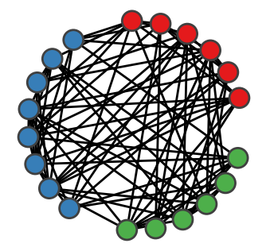

dynamicalab.drawing.group_radial_layout¶
-
dynamicalab.drawing.group_radial_layout(G, groups, radius=1, margin=0.3141592653589793, phase=0.0, dx=0.0, dy=0.0)[source]¶ This constructs a circular layout of nodes with groups. Each group is separated by a certain angle.
Parameters
- GNetworkx Graph
A Networkx
GraphorDiGraph.- groupslist of lists
A list of groups of nodes. Each element of groups must be a list of
node_id.- radiusfloat(default=1)
Radius of the circle. Could be useful if you plan to plot two graphs of different size on the same figure.
- marginfloat(default=np.pi/10)
Angle space between groups. Increase to add space between groups.
- phasefloat(default=0.0)
Initial phase of the circle. This mostly induce a rotation of the nodes on the circle.
- dxfloat(default=0.0)
X translation of nodes.
- dyfloat(default=0.0)
Y translation of nodes.
Returns
- dict
Dictionary of positions that can be use directly with
draw_networks. Each key is anode_id(fromgroups) and the value is a position[x,y].
{ 0 : [-0.5,0.1], 1 : [-0.1, 0.5], ... }
Raise
ValueErrorOccurs if
groupsdoes not contain all nodes (low criterion).
Example
import networkx as nx import dynamicalab.drawing as draw import matplotlib.pyplot as plt import seaborn as sns # Generate network N = 20 G = nx.erdos_renyi_graph(N,0.4) sns.set(style="ticks") fig = plt.figure(figsize=(2,2)) ax = plt.gca() # Divide in three groups groups = [range(6), range(6,14), range(14,N)] pos = draw.group_radial_layout(G, groups) node_colors = ['#e41a1c']*6+['#377eb8']*8+['#4daf4a']*(N-14) draw.draw_networks(G, pos, ax, mu=0.00, arrow_scale=0.0, edge_color="black", node_color=node_colors, use_edge_weigth=False)